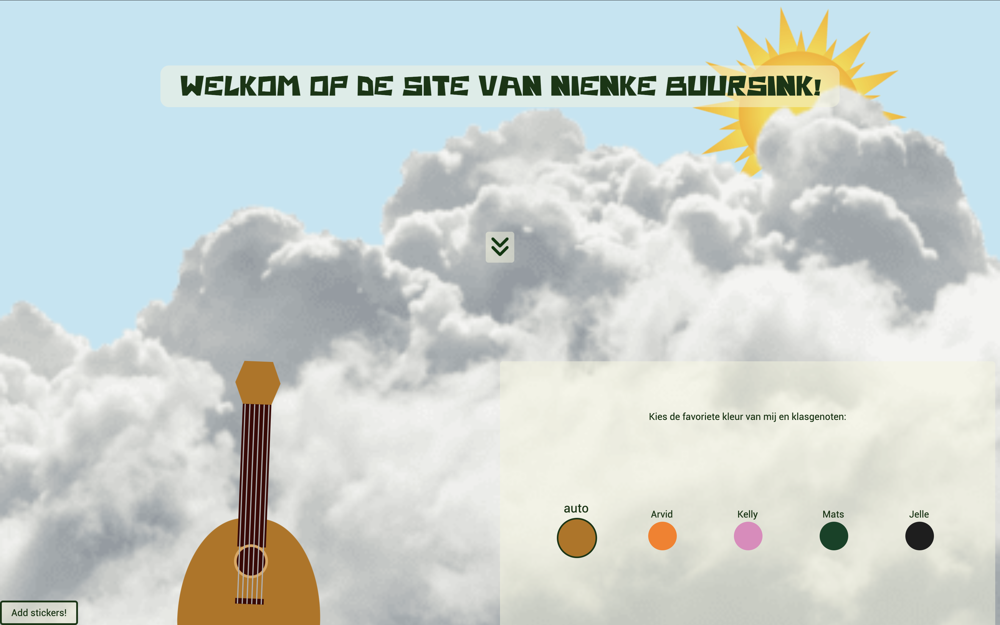
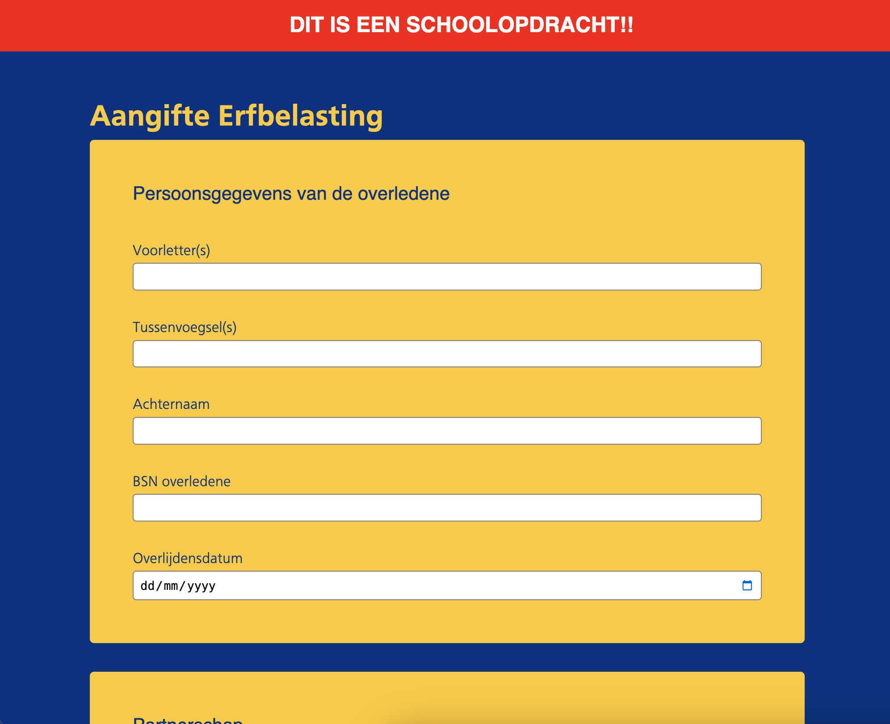
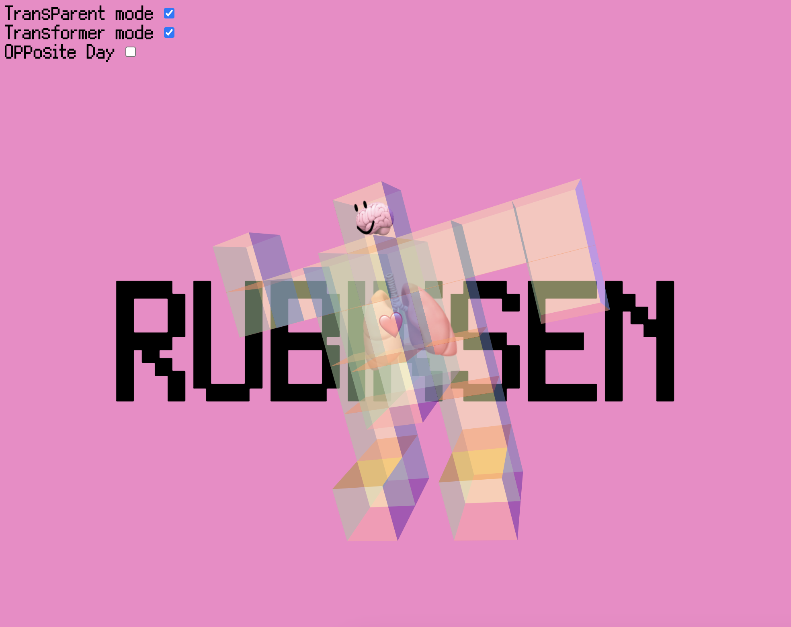
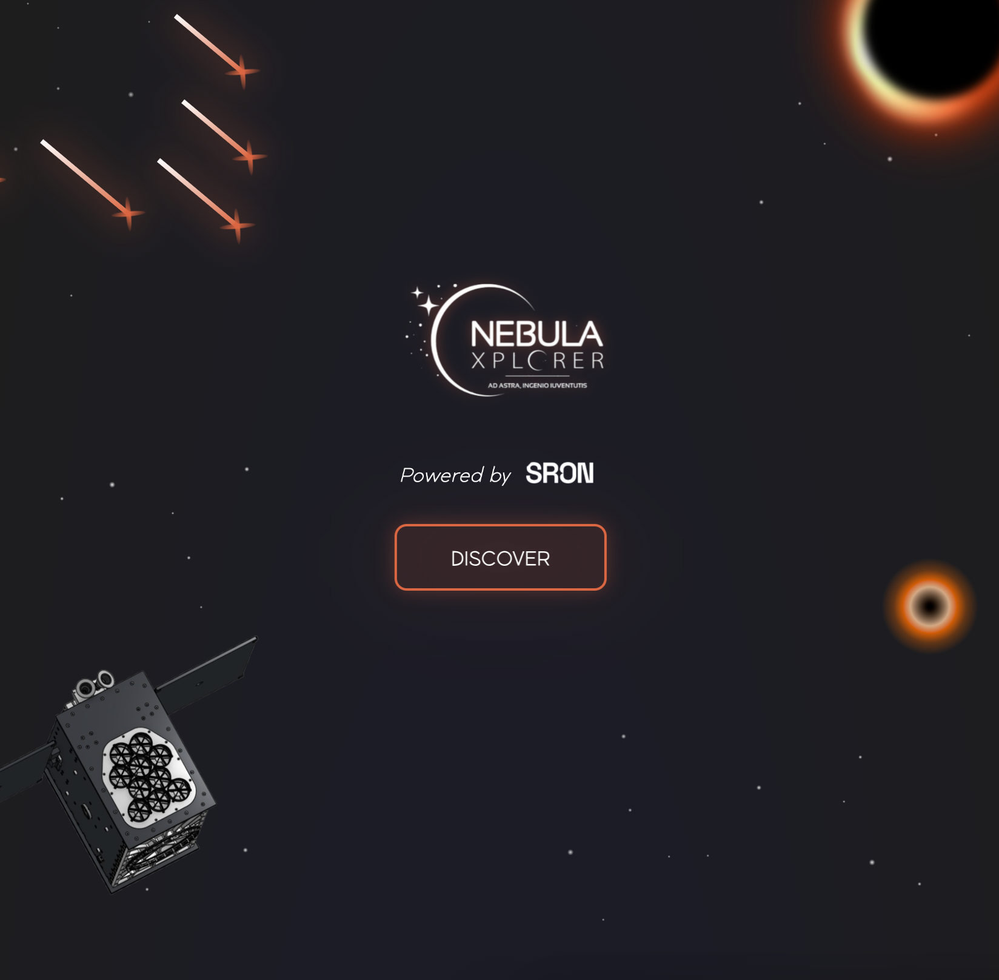
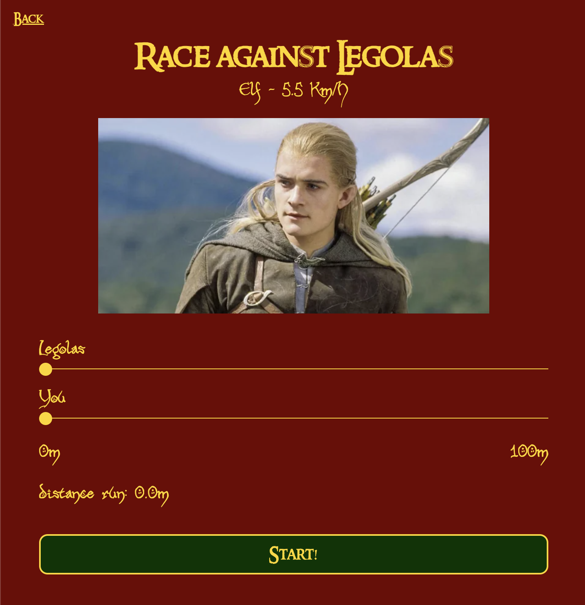
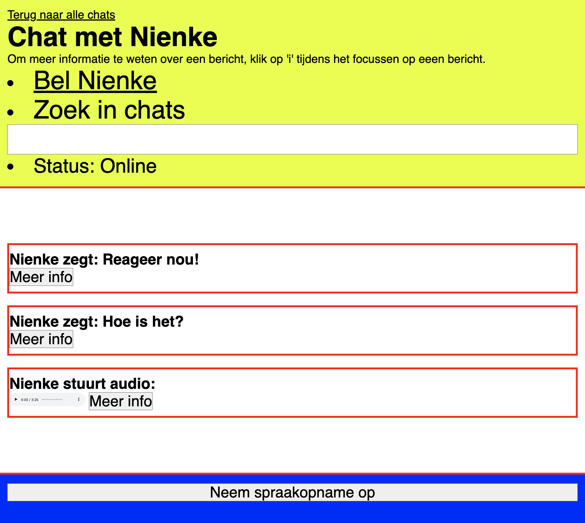
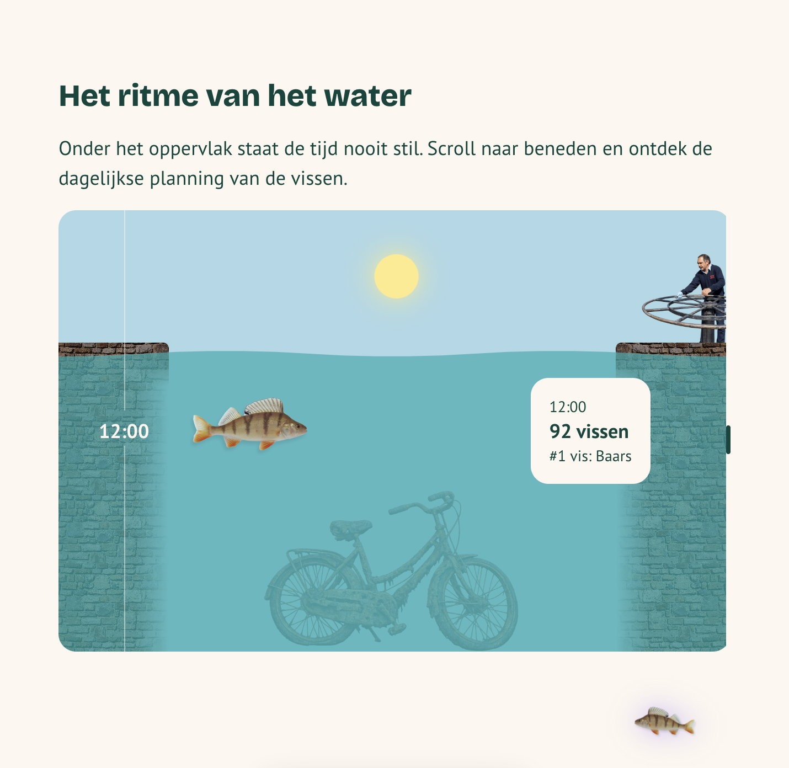

Websites
-
Sprint 0
Een showcase van mijn skills aan het begin van de minor

-
Browser Technologies
Een formulier voor aangifte erfbelasting, met meerdere vragen, invoervelden en logica.

-
CSS
Een interactieve 3D Rubik’s cube met verschillende thema’s en animaties.

-
Hackathon
Een website over de Nebula Explorer, een groepsproject over satelliet die in 2030 de ruimte in gaat.

-
API
Een interactieve website met D&D- en Lord of the Rings-data, waarin karakters en beweging centraal staan.

-
Human Centered Design
Een toegankelijke chat-achtige website voor een blinde gebruiker, gericht op spraakberichten en screenreadergebruik.

-
Visdeurbel
Een website met datavisualisaties van de visdeurbel. In opdracht van Studio MOAN.
